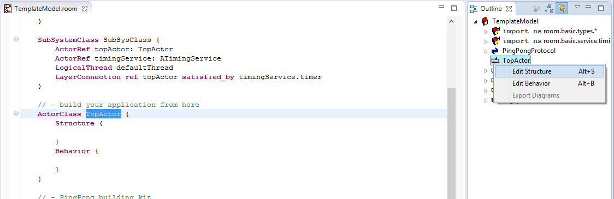
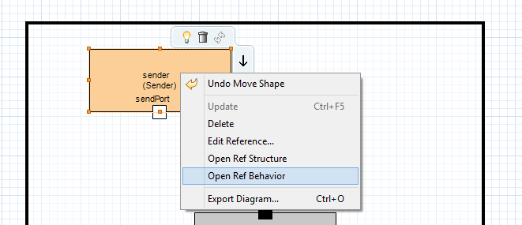

This tutorial describes how to create a simple hierarchical actor system of actors communicating via ports and bindings. Additionally you will use the Timing Service from the eTrice model library. This tutorial can be done for the target languages Java or C. For the Ping Pong scenario we want to create a model with a sender and a reveiver of a message. The receiver has to wait for the ping message from the sender, wait for a second and respond with a pong message.
The resulting Message Sequence Chart (MSC) at the end of this tutorial should look like this:
We will take this MSC as specification for the desired behavior.
We start by opening the TemplateModel.room from the template project as presented in Getting Started. As described previously topActor is currently the only active actor. Furthermore the model provides a building kit for this tutorial, consisting of
Note: The naming Sender Receiver is based on the first message exchange. Sender is the first actor supposed to send a message (ping) and Receiver is the first actor to receive this message. Afterwards they change their roles and it is vice-versa for message pong.
Remaining tasks:
We are going to create hierarchic actor structure and TopActor will functions as a pure container actor. Thus its current state machine is obsolete, we can ignore or delete it.
We continue to add the actors graphically and open the structure diagram of TopActor by right-click in the Outline View on TopActor -> Edit Structure.

Drag and Drop an ActorRef from the Palette within the borders and name the new actor reference sender and set the type to ActorClass Sender. Repeat the step for the receiver.

Finally we connect the ports of both actors using the Binding tool in the Palette. Drag a connection between the two port to establish a Binding.
We will implement two finite state machines (FSMs) to define the event driven behavior of the actors Sender and Receiver.
Before you start with the implementation, have a look at the MSC with the specification of the behavior.
Lets start with the Sender. Right click to sender Open Ref Behavior and in the structure diagram of TopActor.

According to our specification:
Sender initially should send the message ping and then take a state named sendingPing. After receiving the message pong it should remain in a state named receivedPong.
Drag and Drop the Initial Point and a State into the diagram. The latter causes the opening of the dialog Edit State, in which we type the name sendingPing and specify the entry code senderPort.ping();. Note the content assist is activated by pressing CTRL+Space.

In the same manner we create a second State named receivedPong but without any action.
Use the Transition tool to draw the initial transition to sendingPing. The dialog Edit Transition will open and we just click OK as no action is required. Note that initial transitions do not have any trigger events.
Again draw a transition from sendingPing to receivedPong. In the dialog for this transition we set the trigger event to message pong of port sendPort in the top right corner.

At this point the behavior of Sender is complete and should look like this:

We turn our attention to actor Receiver and open its state machine diagram.
According to the specification:
Receiver initially should wait for the message ping. After a short time the message pong should be sent back.
We create the states waitingForPing, receivedPing and sendingPong plus the initial transition.
We draw a transition from waitingForPing to receivedPing and select as trigger event the message ping of port recvPort.

In the entry code of the state receivedPing we start the timeout by sending the message startTimeout(500) (time unit is ms) to the timingService port:
timingService.startTimeout(500);
We draw a transition from receivedPing to sentPong. The event trigger is the respond timeout of the timing service.

In the entry code of the state sentPong we send the message pong back to the Sender: recvPort.pong();
Now the behavior of Receiver is complete, too. It should look like this:

The PingPong model is done now. You can generate, compile and run it as described in Hello World for C or Hello World for Java. The generated MSC in folder log should show the same MSC we used to specify the behavior at the beginning of this tutorial.
Within this tutorial you have learned how to create a FSM with transitions triggered by incoming messages. You have used entry code to send messages and have used the timing service from the model library. You are now familiar with the basic features of eTrice. Further tutorials and examples will take this knowledge as a precondition.